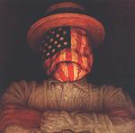

| Artist: | Dreadnaught |
| Title: | The American Standard |
| Label: | Red Fez Records FEZ-005 (Distributed in Europe by Distribee) |
| Length(s): | |
| Year(s) of release: | 2001 |
| Month of review: | [02/2002] |
| 1) | Ballbuster | 4.28 |
| Deus Ex Machina | 20.30 | |
| 2) | The Jester's Theme | 6.36 |
| 3) | Deneb | 2.42 |
| 4) | Tournament | 2.42 |
| 5) | Derby Days | 8.30 |
| 6) | Popeye | 2.25 |
| 7) | Buennaschidt | 4.50 |
| 8) | James Thresher Industries: Building Solid Careers In Middle Management Since 1976 | 0.57 |
| 9) | Welding | 4.51 |
| 10) | Kim Philby | 3.33 |
| The Puemphaus Suite | 8.13 | |
| 11) | Rats And Me | 4.35 |
| 12) | Swing | 3.38 |
| 13) | Clownhead | 5.25 |
The Jester's Theme features some twangy guitars before taking of into a polka like rhyhtm. Even the third time playing this the vocals surprise me. The silliness of the track, as well as the similarity in vocals remind me of Phish. The saxophone towards the end moves away from Phish. Deneb features some electronic metal drums, or something sounding a lot like it and church organ. Tournament takes the quatrology into slightly more normal waters, being mainly a jazzrocky track with some pretty normal sounding guitar and only some antics. Derby Days has a near normal before, once again surprisingly, taking of into a vocal part. This track also features some collage like sounds, making it sound somewhat different from the other parts, yet making it a worthy closer.
Popeye is an up tempo song, almost in a Presidents of the USA kind of way, except that it's pretty good.
Buennaschidt starts of with the meticulous playing you so often hear in jazzrock, but turns out to be a vocal track, with a virtuoso intermezzo, showing a rapid fire of different guitar styles, regular jazzrock, Al DiMeola type romantic and hardcore jazzrock type LTE.
James Thresher takes off at full speed and high on technique, and ends before you know it.
Welding is a mid tempo instrumental track that isn't too striking, but pleasing enough. It features both enough technicalities and melody to bring it on home.
Fate has it I recently read a book about the MI5 (the British internal intelligence agency), so that I can tell you that Kim Philby was once of the four (presumably five) spies that operated for the Russians during the fourties, and were exposed in the fifties. This is a pretty heavy jazzrocky vocal track.
Rats And Me is a more or less vocal poprock track, moving into the more up tempo second part of the suite Swing. This stuff is near normal, but still pretty good.
Clownhead blubbers off with the liquid throbbing of someone who just ran a marathon in less than an hour (yes, I know, that's exactly my point), developing into a vocal track.